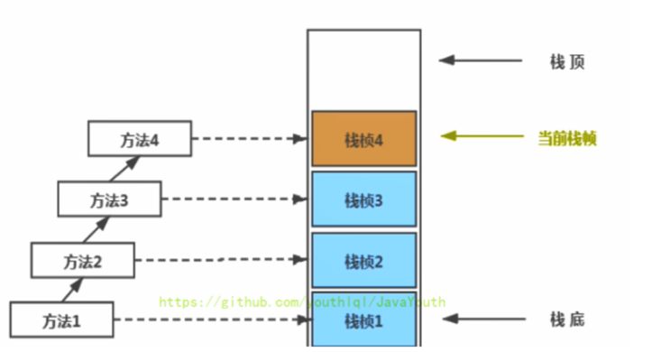

PC寄存器（程序计数器）
它是一块很小的内存空间，几乎可以忽略不记。也是运行速度最快的存储区域。
在JVM规范中，每个线程都有它自己的程序计数器，是线程私有的，生命周期与线程的生命周期保持一致。
任何时间一个线程都只有一个方法在执行，也就是所谓的当前方法。程序计数器会存储当前线程正在执行的Java方法的JVM指令地址；或者，如果是在执行native方法，则是未指定值（undefned）。
它是程序控制流的指示器，分支、循环、跳转、异常处理、线程恢复等基础功能都需要依赖这个计数器来完成。
字节码解释器工作时就是通过改变这个计数器的值来选取下一条需要执行的字节码指令。
它是唯一一个在Java虚拟机规范中没有规定任何OutofMemoryError情况的区域。没有垃圾回收。
PC寄存器的作用
PC寄存器用来存储指向下一条指令的地址，也即将要执行的指令代码。由执行引擎读取下一条指令，并执行该指令。
使用PC寄存器存储字节码指令地址有什么用呢？或者问为什么使用 PC 寄存器来记录当前线程的执行地址呢？
因为CPU需要不停的切换各个线程，这时候切换回来以后，就得知道接着从哪开始继续执行。
JVM的字节码解释器就需要通过改变PC寄存器的值来明确下一条应该执行什么样的字节码指令。
PC寄存器为什么被设定为私有的？
我们都知道所谓的多线程在一个特定的时间段内只会执行其中某一个线程的方法，CPU会不停地做任务切换，这样必然导致经常中断或恢复，如何保证分毫无差呢？为了能够准确地记录各个线程正在执行的当前字节码指令地址，最好的办法自然是为每一个线程都分配一个PC寄存器，这样一来各个线程之间便可以进行独立计算，从而不会出现相互干扰的情况。
虚拟机栈
概述
由于跨平台性的设计，Java的指令都是根据栈来设计的。不同平台CPU架构不同，所以不能设计为基于寄存器的【如果设计成基于寄存器的，耦合度高，性能会有所提升，因为可以对具体的CPU架构进行优化，但是跨平台性大大降低】。
优点是跨平台，指令集小，编译器容易实现，缺点是性能下降，实现同样的功能需要更多的指令。
内存中的栈与堆
首先栈是运行时的单位，而堆是存储的单位。
即：栈解决程序的运行问题，即程序如何执行，或者说如何处理数据。堆解决的是数据存储的问题，即数据怎么放，放哪里
Java虚拟机栈是什么？
Java虚拟机栈（Java Virtual Machine Stack），早期也叫Java栈。每个线程在创建时都会创建一个虚拟机栈，其内部保存一个个的栈帧（Stack Frame），对应着一次次的Java方法调用，栈是线程私有的
虚拟机栈的生命周期
生命周期和线程一致，也就是线程结束了，该虚拟机栈也销毁了
虚拟机栈的作用
主管Java程序的运行，它保存方法的局部变量（8 种基本数据类型、对象的引用地址）、部分结果，并参与方法的调用和返回。
局部变量，它是相比于成员变量来说的（或属性）
基本数据类型变量 VS 引用类型变量（类、数组、接口）
虚拟机栈的特点
栈是一种快速有效的分配存储方式，访问速度仅次于程序计数器。
JVM直接对Java栈的操作只有两个：
每个方法执行，伴随着进栈（入栈、压栈）
执行结束后的出栈工作
对于栈来说不存在垃圾回收问题
栈不需要GC，但是可能存在OOM
虚拟机栈的异常
Java 虚拟机规范允许Java栈的大小是动态的或者是固定不变的。
1，如果采用固定大小的Java虚拟机栈，那每一个线程的Java虚拟机栈容量可以在线程创建的时候独立选定。如果线程请求分配的栈容量超过Java虚拟机栈允许的最大容量，Java虚拟机将会抛出一个StackoverflowError 异常。
2，如果Java虚拟机栈可以动态扩展，并且在尝试扩展的时候无法申请到足够的内存，或者在创建新的线程时没有足够的内存去创建对应的虚拟机栈，那Java虚拟机将会抛出一个 OutofMemoryError 异常。
我们可以使用参数 -Xss 选项来设置线程的最大栈空间，栈的大小直接决定了函数调用的最大可达深度。
栈中存储什么？
每个线程都有自己的栈，栈中的数据都是以栈帧（Stack Frame）的格式存在
在这个线程上正在执行的每个方法都各自对应一个栈帧（Stack Frame）。
栈帧是一个内存区块，是一个数据集，维系着方法执行过程中的各种数据信息。
栈运行原理
JVM直接对Java栈的操作只有两个，就是对栈帧的压栈和出栈，遵循先进后出（后进先出）原则。
在一条活动线程中，一个时间点上，只会有一个活动的栈帧。即只有当前正在执行的方法的栈帧（栈顶栈帧）是有效的。这个栈帧被称为当前栈帧（Current Frame），与当前栈帧相对应的方法就是当前方法（Current Method），定义这个方法的类就是当前类（Current Class）
执行引擎运行的所有字节码指令只针对当前栈帧进行操作。
如果在该方法中调用了其他方法，对应的新的栈帧会被创建出来，放在栈的顶端，成为新的当前帧。

1，不同线程中所包含的栈帧是不允许存在相互引用的，即不可能在一个栈帧之中引用另外一个线程的栈帧。
2，如果当前方法调用了其他方法，方法返回之际，当前栈帧会传回此方法的执行结果给前一个栈帧，接着，虚拟机会丢弃当前栈帧，使得前一个栈帧重新成为当前栈帧。
3，Java方法有两种返回函数的方式。
一种是正常的函数返回，使用return指令。
另一种是方法执行中出现未捕获处理的异常，以抛出异常的方式结束。
但不管使用哪种方式，都会导致栈帧被弹出。
栈帧的内部结构
每个栈帧中存储着：
局部变量表（Local Variables）LV
操作数栈（Operand Stack）（或表达式栈）
动态链接（Dynamic Linking）（或指向运行时常量池的方法引用）
方法返回地址（Return Address）（或方法正常退出或者异常退出的定义）
一些附加信息
并行每个线程下的栈都是私有的，因此每个线程都有自己各自的栈，并且每个栈里面都有很多栈帧，栈帧的大小主要由局部变量表 和 操作数栈决定的